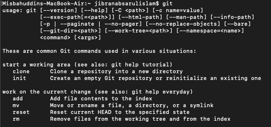
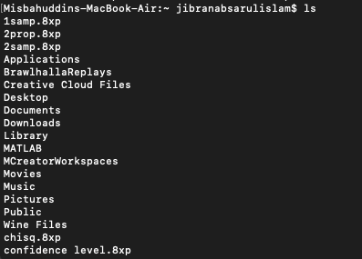
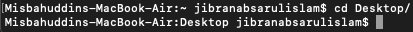
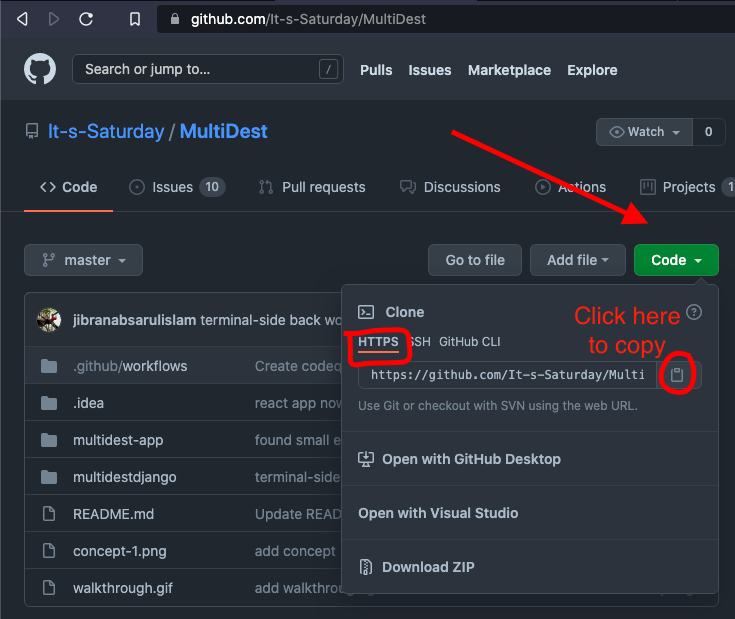
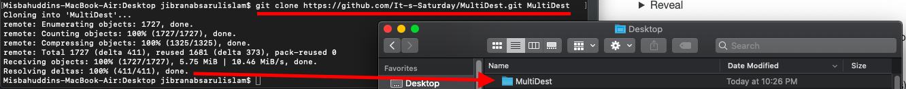

Welcome to It's Saturday, it's kinda good to see you!
There are a couple of steps to get setup on GitHub to start getting those 'hours' in.
- Logging into GitHub
- Create an account, preferrably using your school email. (I say school email because they give you special features and goodies)
- Fill out whatever they say, feed them your information...
- Joining the organization
- Send me (Jibran) your username so I can invite you to have access.
- Cloning our current project
- Okay this is where it gets kinda funky.
- Install Git for your device.
- Now, open your command prompt or powershell and type git to see if it worked.

- We have a couple of commands to get ourselves setup:
- We need to enter our desired directory.
- Use the ls command, which stands for list
- This will show you all files (including folders) in the current scope.
Result

- Use the cd command, which stands for change directory. Go to your desktop.
Result
- cd Desktop
- Note the change in the two lines

- Once we're in the desired working directory, now it's time to clone
- Find the URL of the project you want to get onto your device.
Reveal

- With this link copied, go back to your terminal and type git clone url destinationfolder
Explanation of the command
- git: all git commands need this
- clone: clones, or copies the repository (online store) to our device
- url: the url of the repository, obtained using the method above
- destinationfolder: specify a foldername where the contents of the repository will end up (it will create it for you)
Result

The project is now on your device!